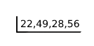
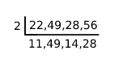
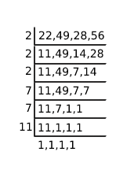

If we goes on writing the multiples of each of the numbers, then the number which is least
and common in each number is called LCM(Least Common Multiple)
When you look at all the factors of numbers, common factor in all the numbers is 24, so 24 is the
LCM of 2,3,6,8.
Way to solve LCM:
LCM of 22,49,28,56.
Write the numbers as the following

from the least prime number divide all the numbers
i) If the number is divisible by prime number then write the quotient under it, else write the same
number under it.

ii) Do the same procedure by using next prime number until getting all ones in the last.

iii) Now multiply each prime numbers which are used to divide numbers
2 × 2 × 2 × 7 × 7 × 11 = 8 × 49 × 11 = 4312
so, 4312 is the LCM of 22,49,28,56.
HCF (Highest Common Factors)
If you goes on writing the factors of number individually, then we will find a greater
number which is common in each number.
then the common number is called HCF.
If you didn't find any common factor then HCF = 1.